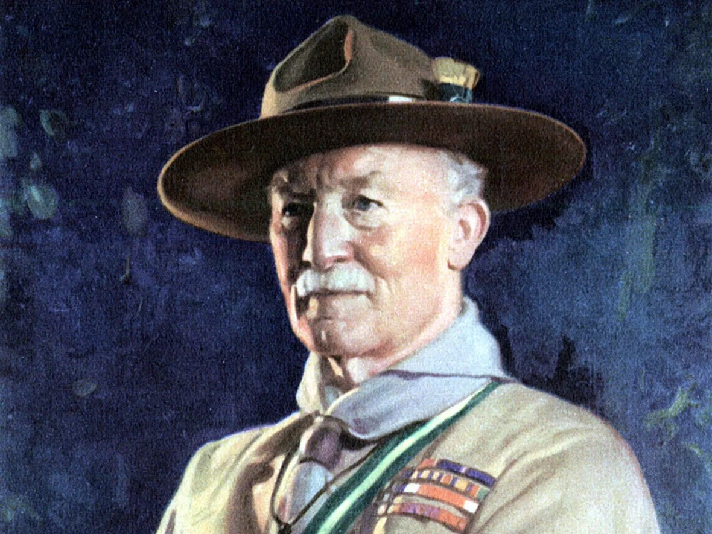
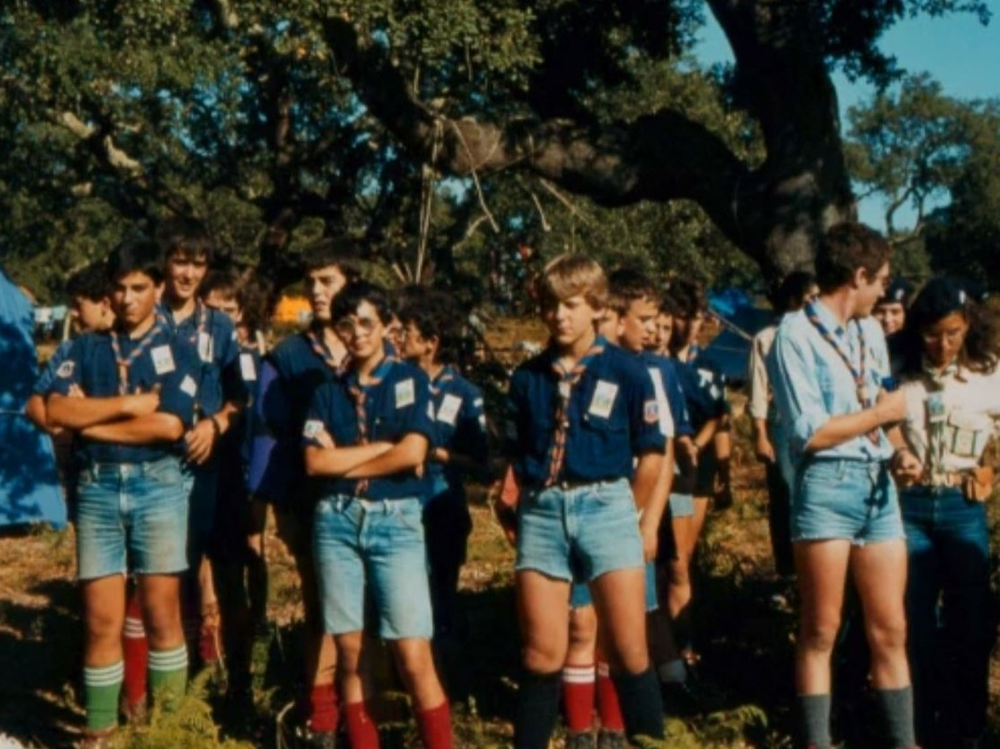
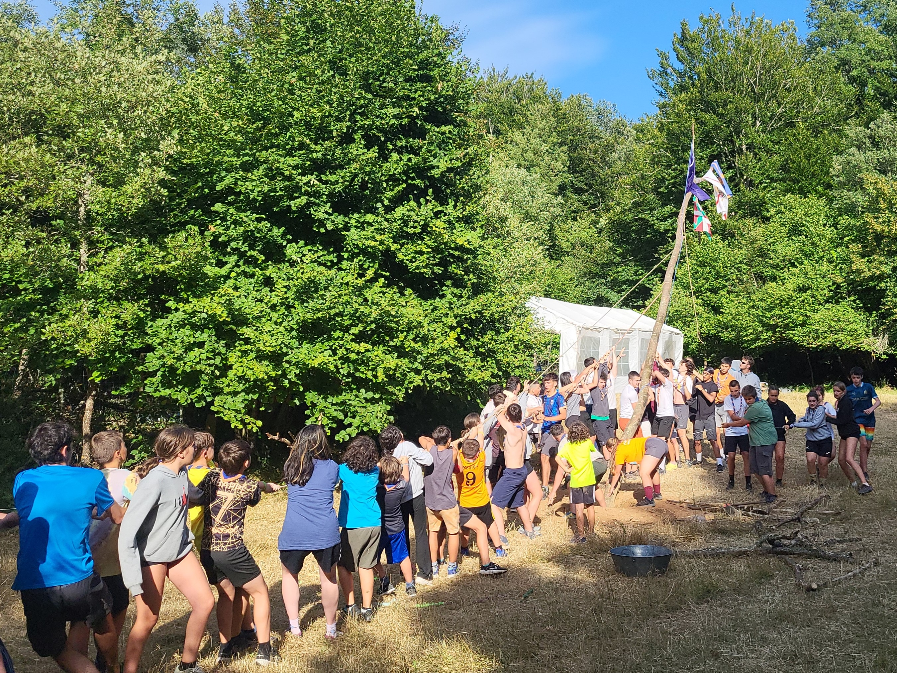

El movimiento Scout fue fundado por Robert Baden-Powell para ofrecer una educación en valores mediante el juego, el contacto con la naturaleza y la vida en comunidad. El proyecto comenzó en 1907 con el campamento de Brownsea y la posterior publicación del libro ‘Escultismo para muchachos’, que condensaba la metodología Scout. Con el paso de los años el escultismo se ha extendido hasta estar presente en 165 países de todos los continentes.
El escultismo llegó a nuestro país en 1912, cuando Teodoro Iradier fundó en Vitoria la primera Tropa de Exploradores. Poco a poco más grupos fueron creándose por todo el país; hasta que, en 1940, la dictadura franquista ilegalizó el escultimo. La mayoría de los grupos se disolvieron, pero unos pocos valientes continuaron su actividad en la clandestinidad.

La historia de nuestro grupo comenzó un 23 de octubre de 1976, cuando cinco rutas del Grupo Scout Manuel Iradier decidieron fundar un nuevo grupo con el apoyo del párroco de La Esperanza. El grupo se llamó Esperantza Eskaut Taldea, y en su primer año reunió a 30 lobatos y rangers.
Con mucho esfuerzo, el grupo fue creciendo hasta estar formado por cuatro ramas: Lobatos, Rangers, Pioneros y Rutas. En 1979 la Esperanza se unió a la delegación de Scouts de Álava y en 1983 ayudó a fundar Euskalerriko Eskautak, la federación que nos agrupa con el resto de grupos del país.

Año tras año el grupo se fue consolidando con mucho esfuerzo y dedicación de los cientos de personas que han pasado por él. Hoy Esperantza Eskaut Taldea sea un grupo referente en el escultismo del país. Hemos participado activamente en la vida de la ciudad, hemos recorrido todo el territorio dándonos a conocer e incluso hemos tenido la oportunidad de viajar por el mundo.
Muchos años han pasado, pero nuestro compromiso sigue intacto. Esperantza Eskaut Taldea todavía tiene mucho por hacer, y seguiremos haciendo lo mejor de lo mejor.
Beti prest!